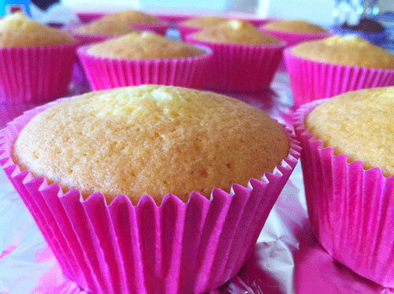
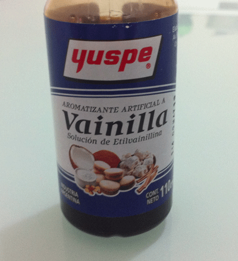
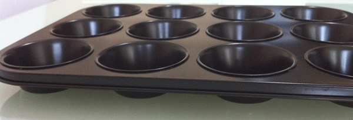
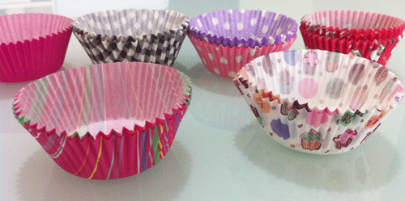
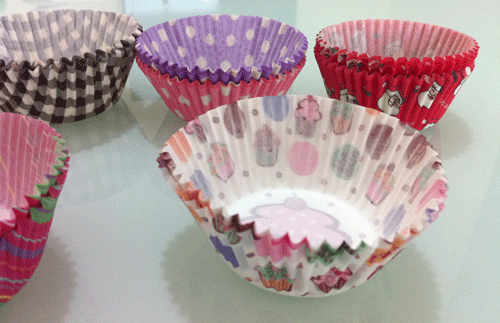

Pasos para hacer un Cupcake 1ª Parte
Kit básico de supervivencia
Todos los que hemos decidido empezar a hacer cupcakes, nos hemos hecho la misma pregunta ¿Cómo empiezo? Lees palabras como colorantes en gel, pasta, polvo o líquidos, purpurinas, fondant, pasta de modelaje, buttercream, butterswiss, marcas desconocidas como PME, Wilton, Sugarflair, Regalice… Después de un rato buscando recetas, puedes llegar a colapsarte… En serio, yo aún sigo descubriendo cosas nuevas cada día, y es que hay mucho por aprender!
He decido escribir esta entrada con el único objetivo de repasar todas las cosas que son imprescindibles antes de empezar a hornear tus primeros cupcakes. Pero sólo lo básico e indispensable, luego ya puedes ampliar la colección hasta el infinito y más allá!
Ingredientes que utilizaremos
Lo primero que vamos a hacer, es repasar los ingredientes de los cupcakes básicos. Para la masa necesitamos harina, mantequilla, levadura, leche, azúcar, huevos y extracto de vainilla. Salvo el extracto de vainilla, todo lo demás lo encontramos en cualquier supermercado. Si vas a hacer un pedido a alguna tienda especializada o hay alguna en tu ciudad, seguro que ahí lo encuentras, sino puedes sustituirlo por aroma de vainilla, que lo encontrarás en los hipermercados.
Yo compré esté en carrefour:
Para el buttercream necesitamos mantequilla, leche, extracto de vainilla y azúcar glass. El azúcar glass también lo venden en los supermercados, de la marca azucarera y en botes de 250 g. Si vas a ir a alguna tienda especializada en productos de repostería, puedes aprovechar y comprarlo por kilos, que sale mejor de precio y para el buttercream se necesita mucho azúcar glass!
Utensilios necesarios
Molde para cupcakes/muffins. Este es el que yo utilizo:
Yo los prefiero así, metalizados y de 12. Si quiero hacer menos, pues solo pongo 6-8 papelitos y no tengo que transportarlos uno a uno como pasa con los moldes de silicona. Sin embargo, si tienes moldes de silicona, puedes utilizarlos sin problemas.
También necesitamos cápsulas de papel. Las primeras pruebas las hice con las que venden blancas en cualquier supermercado, ahora ya voy teniendo un surtido interesante, os enseño algunas de ellas:
 | Inicio | Continuar Segunda Parte. |